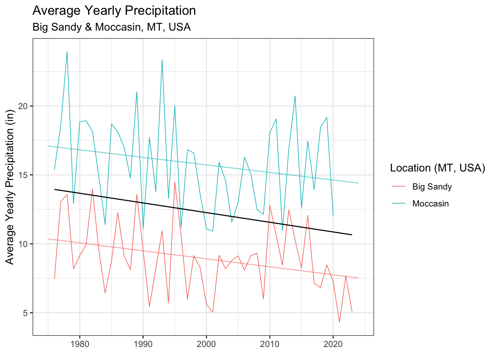
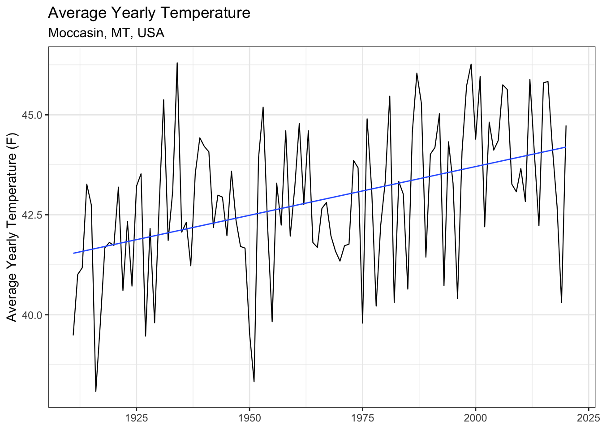

Paper 1: Smooth brome and parasitoids
Introduction
Materials and Methods
Weather data and NDVI analysis
Weather data. We assessed the long and medium term temperature and precipitation trends of our field sites using weather data from the National Oceanic and Atmospheric Administration (NOAA, Silver Spring, MA, USA). Data for each field site was averaged from three of the closest weather stations to that location. Data was plotted using R Studio (R Studio version 2024.04.0+735, R 2024) package ‘ggplot’ (version 3.4.4) (Wickham 2016). Data was then fit using a linear model using the ‘lm’ command using average yearly precipitation (inches) as the response variable and year as the predictor.
NDVI analysis. We compared the relative greening throughout the growing season between wheat fields and adjacent B. inermis using the normalized difference vegetation index (NDVI). NDVI is typically used to assess vegetation health and density, and is calculated from the visible and near-infared light reflected by vegetation (Pettorelli et al. 2005). Data was downloaded using Google Earth Engine (Google Inc. 2023, Mountain View, CA, USA).
Controlled C. cinctus infestation of B. inermis
Insects and Cages. Assessment of C. cinctus infestation and mortality within B. inermis were assessed using a 34 x 60 ft plot at the Arthur H. Post Agronomy Farm (43°38’19.39”N, 116°14’28.86”W), an extension research station of Montana State University in Bozeman, MT. The cage structure was built using 1-inch PVC piping with the netting made using 530\(\mu\) Amber Lumite Screen (BioQuip\(^\circledR\) Products, LLC). Twelve cages were built to dimensions of 6ft x 3ft x 3ft (L x W x H) with cage locations selected randomly based on the space available within the plot and arranged in sets of three.
Wheat stem stubble was collected in Three Forks, MT, USA (43°38’19.39”N, 116°14’28.86”W) from fields that experienced high levels of C. cinctus infestation and cutting the year prior. Cut stubble, which contained C. cinctus larvae in diapause, were kept refrigerated between -2°C and 3°C for >100 days as required to complete obligatory larval diapause. As needed, stubs were removed from refrigeration and kept at 22-27°C for 4-5 weeks inside of 100 oz GladWare® storage containers (Glad®, Oakland, California USA). Once B. inermis stems reached six inches tall, stub containers with emerging sawflies were added to cages to mimic sawfly infestation pressure. Sawfly quantity treatments were as follows: high (600 stubs), low (200 stubs), and control (0 stubs).
Data Collection. In late August, B. inermis stems were collected from each cage. Each stem was sliced open using X-Acto® knives to collect data on infestation, dead larvae, live larvae, and parasitism at each internode.
Montana Field Survey
Stem collection and processing. We conducted a field survey to assess C. cinctus infestation, larval mortality, and B. cephi and B. lissogaster prevalence within B. inermis and adjacent wheat fields. Sites were chosen across 2 counties in north-central Montana, United States. (Chouteau, Judith Basin), which consistently experience high C. cinctus pressure. Samples were collected from wheat fields and adjacent B. inermis in early July and late August in 2021, 2022, and 2023 from sites in Big Sandy, Moccasin, and Amsterdam, MT, USA. Sampling sites were set up as 100\(m^2\) polygons along the edge of adjoining wheat fields. Four collection squares of 1ft x 1ft were randomly selected within each polygon during both collection events each year. All stems within each 1 x 1 ft square were collected using a shovel to remove both stem and root material. Wheat stems were collected at distances of 5 and 20 meters from the edge of the field. Samples were collected in 4 rows at 10 meters apart. 2 samples were collected in each row at distances of 5 and 20 meters. 1 ft samples were collected at each point.
Wheat and B. inermis stems were then returned to Montana State University, Bozeman, Montana and stored in a 10°C cold wet storage until dissection. Stems were dissected lengthwise with a fine-bladed scalpel to determine presence or absence of C. cinctus larvae infestation, live eggs, dead eggs, dead larvae, live larvae, parasitism, and cutting. Sawfly larvae were identified based on descriptions in Criddle (1915) and Wallace and McNeal (1996).
Statistical Analysis. We used generalized linear mixed models with binomial errors (logit link) fit using bound optimization by quadratic approximation, with a maximum of 200,000 iterations, were run in the lme4 package in R (Douglas Bates, Bolker, and Walker 2015) to examine the effects of location and year (fixed effects) on each of the three response variables: proportion of stems infested, proportion of stems cut, and proportion os stems parasitized by Bracon spp. ’
To better understand the density of Bracon spp. within the wheat and B. inermis sampling sites, we converted our units to the ratio of parasitoids to stem per unit area. Densities of stems are different when considering B. inermis and cultivated wheat or barley. Using this conversion, we attempted to better understand how the density of parasitoids (and WSS) is changed by looking at each kind of plant.
Results
Historical Weather Analysis
We observed a significant linear relationship (r = 0.1, P = 0.033, estimate = -0.058) between average precipitation and year for both Big Sandy and Moccasin, Montana. This means that for each one year increase, we are seeing a decrease in 0.05 inches of precipitation.
In addition, we observed a significant positive linear relationship (r = 0.178, P < 0.05, estimate = 0.024) between year and average yearly temperature for Moccasin, MT. This means that each year, the average daily temperature has increased by 0.02°F.

NDVI Analysis of Field Sites
We observed a notable difference in NDVI when comparing adjacent B. inermis and spring wheat. We saw a significant difference in the July NDVI (0.846, P < 0.05). The B. inermis NDVI remained relatively linear in it’s downslope (BROME SLOPE POST JULY) compared to the wheat field (WHEAT FIELD POST JULY).

Need to add map showing where NDVI measurments came from
Controlled C cinctus Infestation of B. inermis
C. cinctus showed a high ability to infest B. inermis in the controlled test conditions. Averaged across both years, we observed 66.5% of stems infested for high treatments and 47.3% of stems for low treatments. We found strong evidence suggesting that there was a significant difference between infestation at high and low treatment levels when holding year constant (r = 0.83, P < 0.05).
Cutting was observed at 5.7% for the high treatments and 3.9% for the low, showing strong evidence for a difference in cutting between high and low treatment groups (r = 0.592, P < 0.05).

Montana Field Sites
We quantified C. cinctus and Bracon spp. parasitoid presence in 6,148 wheat and grass stems across 10 research sites in 2022 and 2023. Infestation by C. cinctus within B. inermis varied between collection sites, with the greatest infestation taking place within our three Big Sandy, MT sampling sites (2023: 65.4%, 2022: 63.1%), while the lowest infestation observed was in Moccasin, MT (2023: 40.8%, 2022: 60.7%). Across all sites in Big Sandy and Moccasin, we observed an average infestation of 57.5% within B. inermis and 47.6% within the adjacent wheat.
Parasitoid presence was observed at the highest levels in
B. inermis displayed very low levels of C. cinctus cutting when compared to adjacent wheat fields. In Moccasin,
[1] 6148
Citations
Douglas Bates, MM, Ben Bolker, and Steve Walker. 2015. “Fitting Linear Mixed-Effects Models Using Lme4.” Journal of Statistical Software 67 (1): 1–48.
Pettorelli, Nathalie, Jon Olav Vik, Atle Mysterud, Jean Michel Gaillard, Compton J. Tucker, and Nils Chr Stenseth. 2005. “Using the Satellite-Derived NDVI to Assess Ecological Responses to Environmental Change.” Trends in Ecology and Evolution. https://doi.org/10.1016/j.tree.2005.05.011.
Wickham, Hadley. 2016. Ggplot2: Elegant Graphics for Data Analysis. Springer-Verlag New York. https://ggplot2.tidyverse.org.